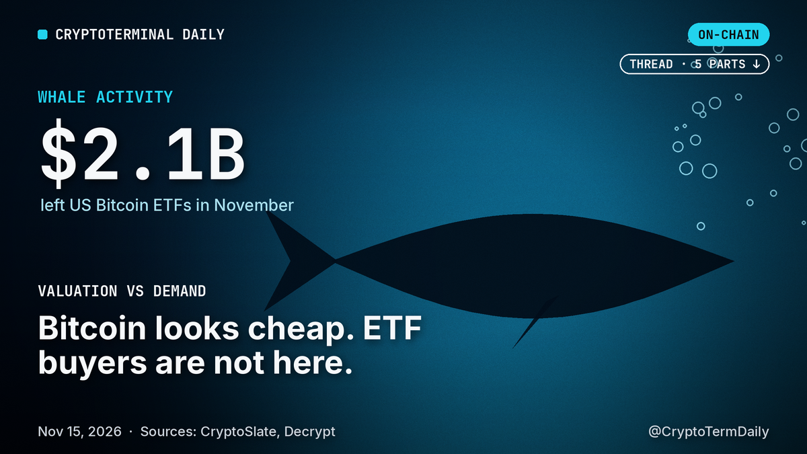

Bitcoin looks cheap on one gauge, but the buyers have not shown up

A valuation alarm rings while the money keeps leaving
Bitcoin picked up a fresh bullish-sounding signal over the weekend. The catch is that the same weekend showed the one group everyone watches for confirmation, the spot ETF holders, still heading for the door. Put the two side by side and you get a market that looks inexpensive on paper and unconvinced in practice.
What the signal actually says
On Nov. 15, CryptoQuant analyst Darkfost reported that Bitcoin's MVRV ratio had dropped below 1.2. MVRV compares what the whole network is worth at today's price with what it was worth when each coin last moved. When the ratio sinks, the average holder is sitting closer to break-even, and in past downturns that has often been where selling pressure starts to run out.
Darkfost called this the third time his valuation preset has fired during the 2026 bear market. The earlier alerts came in February, when Bitcoin crossed $60,000, and again from June to July, when it reached $57,000. In other words, two previous triggers arrived with Bitcoin trading well below the levels we see now, and neither one is a clean guide to what comes next.
Why the preset deserves caution
CryptoSlate points out that Darkfost adjusts the preset over time to reflect the long decline in MVRV. That matters. If the goalposts move, then three alerts do not automatically mean three comparable events. The post also does not publish a history of threshold changes or a backtest that others could reproduce. A signal you cannot test is a data point, not a forecast.
There is also a vocabulary trap. CryptoQuant's own methodology guide discusses MVRV below 1 as a possible bottom zone. Darkfost's adjusted trigger at 1.2 is a different animal, and treating the two as the same would overstate the case.
A second reading points the same way
A separate CryptoQuant note from XWIN Japan put the spent output profit ratio near 0.98. SOPR measures whether coins that moved did so at a gain or a loss. A reading under 1 means that, in aggregate, coins were being spent for less than they were worth when they were created. The note did not say which version of SOPR it used or when it was taken, so it cannot be compared cleanly with other readings. It leans toward the idea that holders are still selling at a loss, not that the pain is over.
The demand side is the weak link
Valuation tells you whether a price is low. It does not tell you who will buy. For that, the ETF numbers are the usual test, and they are not encouraging. Per Farside Investors, five completed sessions through Nov. 13 added up to $1B in net outflows. Decrypt's tracker has the streak at seven straight trading days after Friday's $185.4M exit, with roughly $2.1B gone from the funds in November. Cumulative net inflows since launch have slipped to $55.3B, and total net assets of $94.9B now sit below the $100B mark they held through much of October.
These are dated fund flows, not Sunday trades, and ETFs are only one route into Bitcoin. Still, a channel that was meant to supply steady new money is currently returning it.
The market backdrop
Decrypt, citing CoinGecko, had Bitcoin around $64,500 over the weekend, roughly 15% lower for the week. Ether, at about $1,790, gave back 8.4%, and Solana, near $70, gave back 12%. The whole sector is worth about $2.3T after a 4.5% slide.
Not everyone is leaving. Decrypt notes that JPMorgan's holdings of Bitcoin and crypto-linked securities are approaching $1B, based on its latest SEC filing. But those purchases predate the recent drop, so they say little about who is buying now.
How to read the gap
There are two stories the data can support. In the optimistic one, valuation is stretched to the downside, loss-taking is slowing and the next bid arrives once the selling wears itself out. In the cautious one, a cheaper-looking market simply keeps getting cheaper because the marginal buyer is missing.
Nothing in the cited reports settles that argument. Darkfost's alert measures the whole network at once. The SOPR note measures coins that moved. Neither shows fresh demand, and the ETF numbers show the opposite of fresh demand. CryptoSlate's framing is the sensible one: a lower valuation is a condition for a recovery, not evidence of one.
What to watch next
First, whether daily ETF outflows keep shrinking or flip to inflows. Friday's $185.4M was smaller than earlier daily exits in the streak, but it was still an exit. Second, whether a clearer SOPR reading emerges with its variant and timing stated, so loss-taking can be tracked properly. Third, whether the next valuation alert, if there is one, comes with a published threshold history that lets readers judge it.
Until buyers return, the cheap signal is only half of the picture.